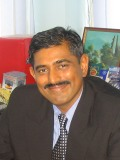

Associate Professor Dr. Sureswaran Ramadass
Head of Network Research Group
Universiti Sains Malaysia
It is indeed a privilege and honor for me to have been given this opportunity to say a few words for the 10th anniversary of the School on the Internet (SOI) Asia Project.
My heartiest congratulations go to all the partners of AI3 and SOI Asia on this auspicious occasion. SOI Asia exemplifies our aspiration to develop an information based society, where expertise in ICT and multimedia are developed and expanded. SOI Asia provides Internet environments for the universities located in the region utilizing satellite based Internet. It is an inexpensive, ease in deployment and a feasible way to conduct research and development of necessary technology for IT human resource development in Asia. Basically the SOI Asia Project is a new educational methodology for universities in Malaysia, Japan as well as other educational institutions abroad. The initiatives of Malaysia can be seen by the participation of three institutes which are Universiti Sains Malaysia, HELP Institute and the Asian Institute of Medicine, Science & Technology in the SOI Asia Project. The usage of Multimedia Conferencing System (MCS) - a technology developed by Universiti Sains Malaysia researchers are actively used by few participating institutes of the AI3 and SOI Asia Project which are Universiti Sains Malaysia, Temasek Polytechnic in Singapore and ASTI in Philippines for the purpose of distance learning.
There is no doubt that SOI Asia Project will generate knowledge and innovation for the future development of information, communication and multimedia as well as the education sector itself. SOI Asia Project is essential in developing a platform for the development of the necessary technology as well as skilled human resources for individual partners' university using the environment.
In conclusion, I hope that SOI Asia will be a turning point towards the development of the ICT as well as the education field in the world. I would like to express my heartfelt thanks to the team of SOI Asia for giving me a chance to say a few words on this auspicious occasion.
Thank you.